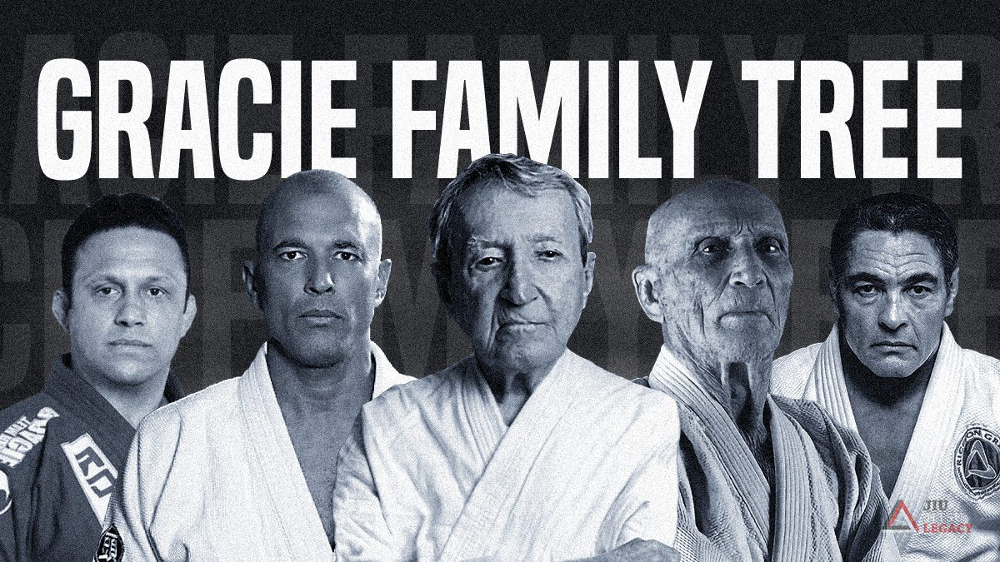

The Evolution of Brazilian Jiu-Jitsu
From Japanese Judo to the modern grappling revolution

Brazilian Jiu-Jitsu is the product of a long evolution rather than the invention of a single person. Its roots reach back to Japanese martial arts and the development of Kodokan Judo. In the early twentieth century, Mitsuyo Maeda traveled outside Japan and eventually arrived in Brazil, where his teaching helped establish one of the most influential branches of modern grappling.
Among Maeda's Brazilian students was Carlos Gracie, who went on to teach his brothers. Hélio Gracie became particularly important in the development of the Gracie family's approach, emphasizing leverage, timing, positional control, and techniques that could allow a smaller practitioner to deal with a larger opponent.
The Gracie influence
Carlos and Hélio Gracie helped transform Brazilian Jiu-Jitsu into a distinct Brazilian grappling culture, while the family's challenge matches and vale-tudo competition helped establish its reputation as a practical fighting art.
The Gracies, however, were not the only important lineage in Brazilian Jiu-Jitsu. Oswaldo Fadda developed another influential Brazilian tradition, and challenge matches between Fadda's students and the Gracies demonstrated that technical excellence existed beyond the Gracie academies.
Brazilian Jiu-Jitsu eventually reached a worldwide audience. Royce Gracie's performances at the first Ultimate Fighting Championship events in the 1990s demonstrated the effectiveness of grappling against practitioners of other martial arts and played a major role in the growth of Brazilian Jiu-Jitsu and mixed martial arts.
The art continued to evolve beyond the traditional gi. Eddie Bravo became one of the most recognizable figures in the development of modern no-gi grappling. His victory over Royler Gracie at ADCC in 2003 and the subsequent growth of 10th Planet Jiu-Jitsu helped popularize a system built specifically around no-gi training.
Another major influence on modern grappling has been John Danaher. His systematic approach to technique, positional problem-solving, leg locks, and submission systems has influenced an entire generation of elite competitors. His students, including Gordon Ryan and Garry Tonon, helped push modern submission grappling toward increasingly systematic and specialized approaches.
Today, Brazilian Jiu-Jitsu continues to change. The sport has expanded internationally, while competitors constantly develop new guards, passing systems, submission chains, wrestling integrations, and no-gi strategies. What began as an evolving martial tradition in Brazil has become a worldwide grappling laboratory.
Top 5 BJJ Academies in Texas
- Kingsway Jiu-Jitsu — Austin
- 10th Planet Jiu-Jitsu Houston — Houston
- Six Blades Jiu-Jitsu Austin — Austin
- Paragon Jiu-Jitsu Academy — Austin
- Renzo Gracie Austin — Austin